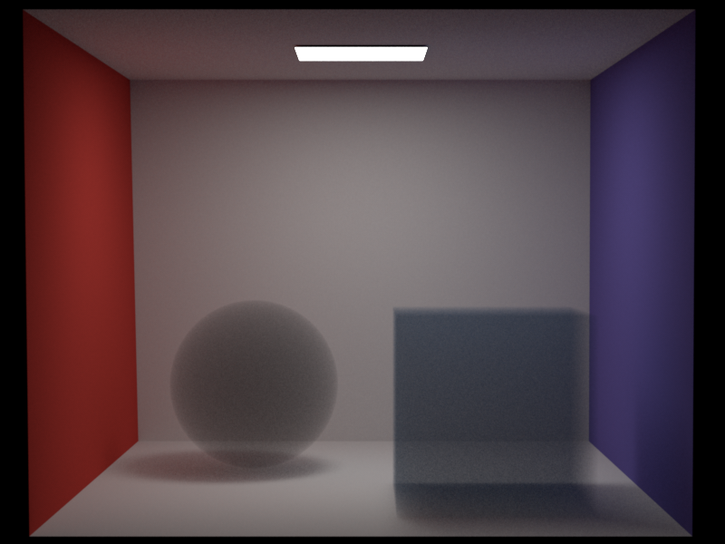
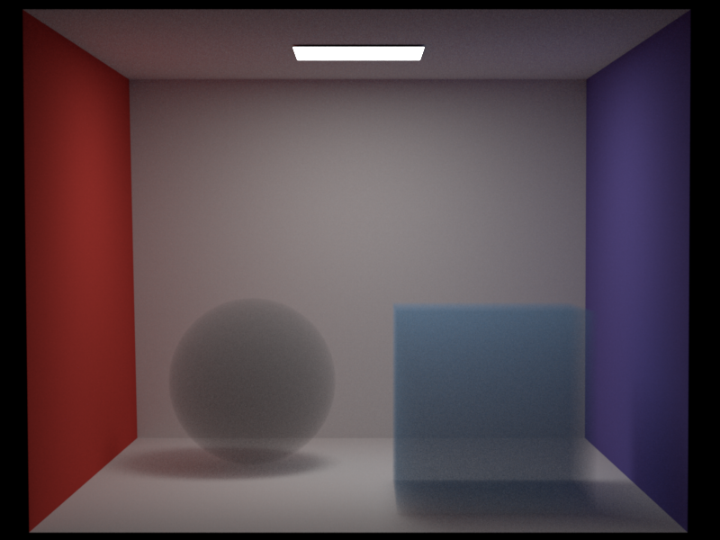
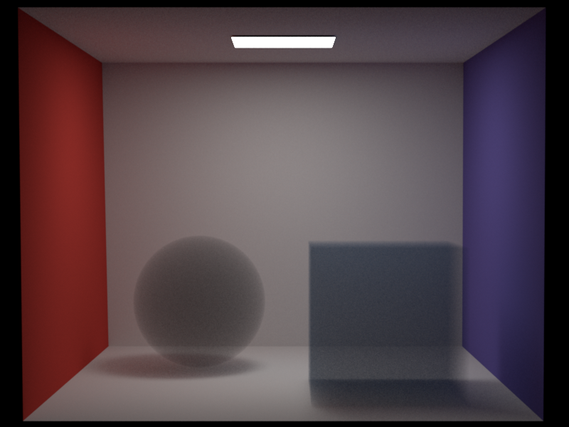
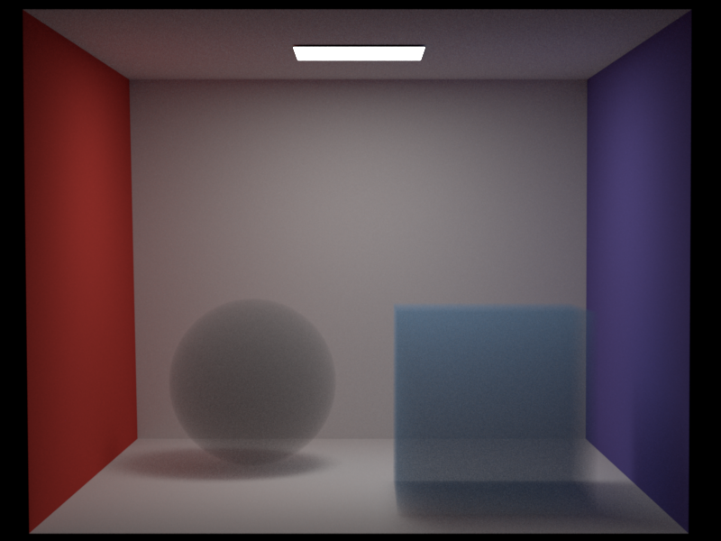

Anisotropic Phase Function: henyey-greenstein function
Qi Ma
Updated Files
- include/nori/phase.h
- include/nori/warp.h
- src/henyey_greenstein.cpp
- src/isotropic.cpp
- src/warp.cpp
- src/warptest.cpp
Implementation
We implemented the naive isotropic phase function and the Henyey-Greenstein phase function. The Henyey-Greenstein phase function is an anisotropic phase function that models the scattering of light in a specific direction.
\[P(\theta) = \frac{1}{4\pi} \frac{1 - g^2}{(1 + g^2 - 2g \cos\theta)^{3/2}}\]where:
- \(g\) is the anisotropy parameter
- \(\theta\) is the angle between the incident and scattered light directions
To implement the Henyey-Greenstein phase function, we created a PhaseFunction class and derived class: HenyeyGreenstein. The HenyeyGreenstein class receive the asymmetry parameter \( g \) as input.
Its core functionality is in the sample method, which samples a new direction based on the Henyey-Greenstein phase function. The pdf method returns the probability density function value.
Validation
We compared the Henyey-Greenstein phase function with the isotropic phase function in a simple Cornell box scene. The results show that the Henyey-Greenstein phase function improves rendering quality in a heterogeneous medium.
Examining the light-facing and backlit sides of the bunny cloud, we observe that when g > 0, the light-facing side appears brighter than the backlit side. This result aligns with expectations, as the Henyey-Greenstein phase function causes more light to scatter forward when g > 0.

Comparison with Mitsuba Results
We compared our results with those generated using Mitsuba. Due to limitations in converting the VDB file format to the VOL file format, we were unable to perform a direct comparison in the heterogeneous medium using the Henyey-Greenstein phase function. Instead, we evaluated results in a homogeneous medium with g = 0.5 and g = -0.5 at 256 samples per pixel (SPP).
 



Our results are slightly brighter than those from Mitsuba when |g| > 0, though we have not identified the exact cause of this discrepancy. I believe my implementation faithfully follows the Henyey-Greenstein formula and adheres to the implementation details provided in the pbr-book Phase Functions.
Validation with Sampling Warptest
To validate the correctness of our Henyey-Greenstein sampling implementation, we conducted a warptest. In the video below, as g transitions from -1 to 1, the sampled points shift from a backward-centered distribution to a forward-centered distribution, consistent with the expected behavior.